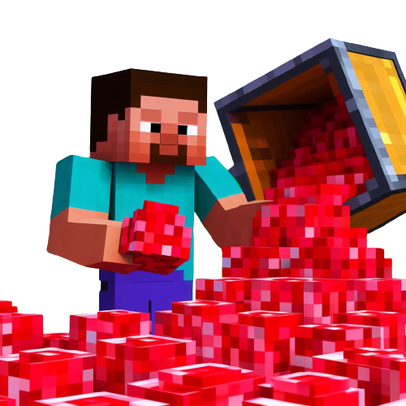
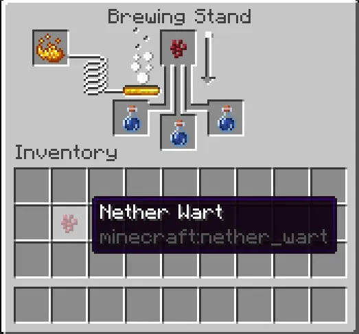

Description
Awkward Potion is the base for most other potions. It can be used as a base to create various effects when combined with additional ingredients.
Ingredients
To make Awkward Potion, You will need:
-

Water Bottle
You will need empty glass bottles, which you can obtain by right-clicking on a water source or by using glass bottles in your crafting grid.
-

Nether Wart
Nether Wart is a plant that can be found in the Nether dimension. You'll need to gather Nether Wart, which can be farmed in the Overworld with soul sand, or you can find it in Nether Fortresses in the Nether dimension.
Steps
Follow the Following Steps to Make Awkward Potion:
-

Gather Nether Wart
Find and collect Nether Wart from Nether Fortresses in the Nether or farm it using soul sand in the Overworld. To break Nether Wart, just right-click on it when you have an empty hand.
-

Create Water Bottle
To make water bottles, right-click on a water source (like a river or lake) with your empty glass bottles.
-

Access a Brewing Stand
Place your brewing stand down somewhere in your world. You can craft a brewing stand using a blaze rod and three cobblestones. Then, right-click on the brewing stand to open its interface.
-

Brew the Awkward Potion
- Put the water bottles in the brewing stand's ingredient slots.
- Add the Nether Wart as the brewing ingredient.
- Wait for the brewing process to complete.